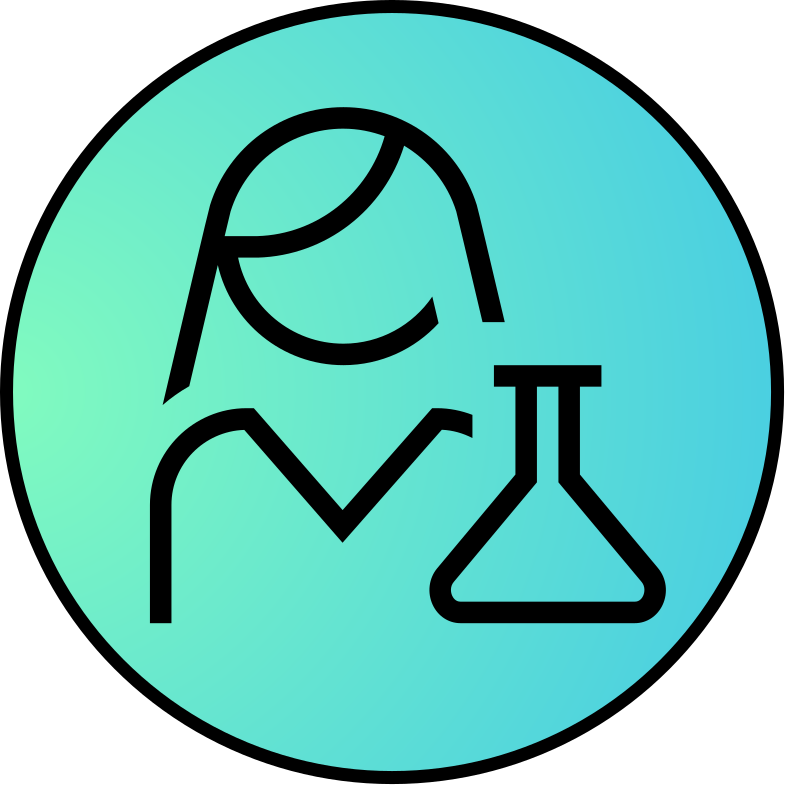
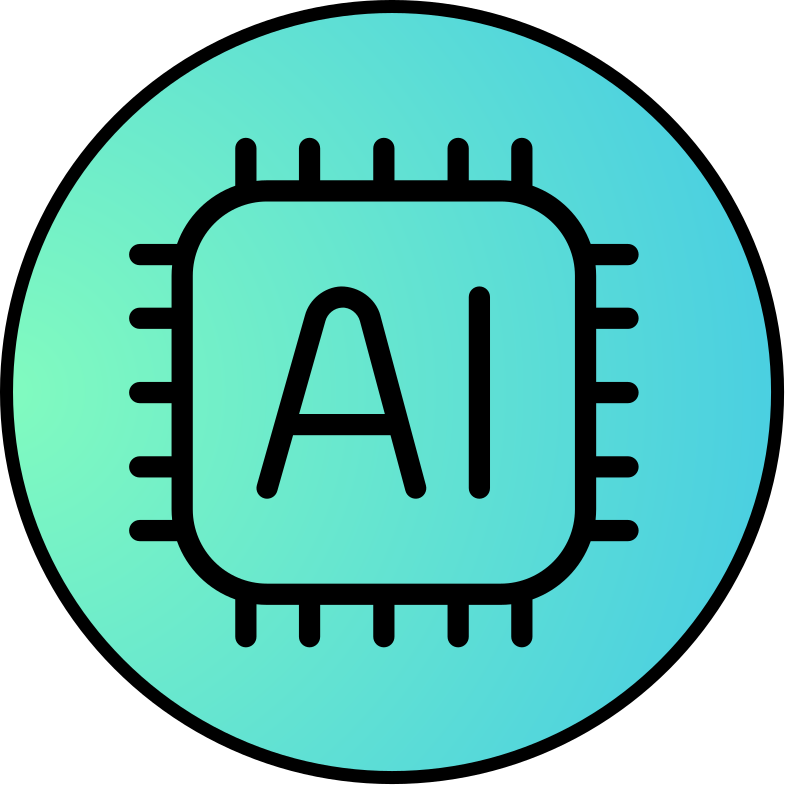

Contact us
We are always seeking talented and motivated individuals to join our dynamic and interdisciplinary team. If you are a passionate student or researcher interested in the exciting field of AI applications in medicine, we would love to hear from you!
We offer various opportunities for collaboration, including:
- Master Thesis: If you are a high-achieving master's student with a strong academic background in computer science, physics, electrical engineering, or a related field, and have a keen interest in medical AI, we encourage you to consider pursuing your master thesis with us. This is also an excellent opportunity for us to get to know you and potentially follow-up with a carrier as a PhD student in our lab.
- PhD Thesis: For exceptional candidates who have completed their master's degree with above-average grades and aspire to conduct cutting-edge research in AI for medical imaging and precision oncology, we provide a stimulating environment to pursue your doctoral studies.
If you believe you have the skills, passion, and academic excellence to contribute to our mission of advancing AI in medicine, please don't hesitate to reach out to us. Send your CV, a brief statement of your research interests, and relevant academic transcripts to XXX.
Please also try to solve the riddle below - you will get bonus points, if you solve it! We look forward to hearing from you!
Can you solve this riddle?
Fill all edges of this graph with the number 1 to 24. Each number can only be used one. The numbers 7, 12, 20, and 24 are already given. The nodes provide additional constraints:
The number inside this node denotes the sum of all edges directly connected to it.
There exists a non-intersecting path starting from this node with the sum of the weights of the edges along that path equaling the number within this node. Multiple numbers refer to multiple paths (may overlap).
  Once you filled all edges find the shortest weighted path from the scientist to the AI-chip and convert it to letters (1=A, 2=B etc.) to reveal the secret message.